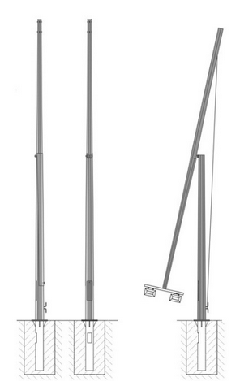
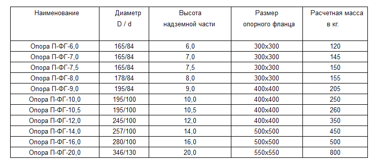

Складывающиеся конические опоры П-ФГ и ОГКС применяются для освещения территорий, на которых затруднен подъезд спецтехники, которая обслуживает осветительное оборудование на этих опорах. Сверху на опору устанавливается светильник венчающего типа, либо кронштейн для светильников различных типов. Данный тип опор предусматривает обслуживание осветительных приборов на уровне земли. Опоры выполнены из листового металлопроката, что существенно снижает массу изделия по сравнению с аналогичной трубной продукцией. Сталь для элементов конструкции опор выбирается исходя из климатического района эксплуатации согласно СНиП II -23-81 «Стальные конструкции».
Установка опор производится на железобетонное основание (фундамент). Фундамент состоит из закладного металлического элемента и армированного бетона. Параметры фундамента определяются расчётом и зависят от зоны эксплуатации опор и параметров грунта. При необходимости возможно применение выносной консоли.
Для складывающихся опор предусмотрена исключительно подземная подводка кабеля. В фундаментном блоке расположен лючок для ввода кабеля в опору. В надземной части опоры расположен лючок обслуживания.
Антикоррозийная защита методом горячего цинкования ГОСТ 9.307-89.
Условное обозначение: П-ФГ – опора поворотная фланцевая граненная.
Высота надземной части: от 6 до 20 метров
